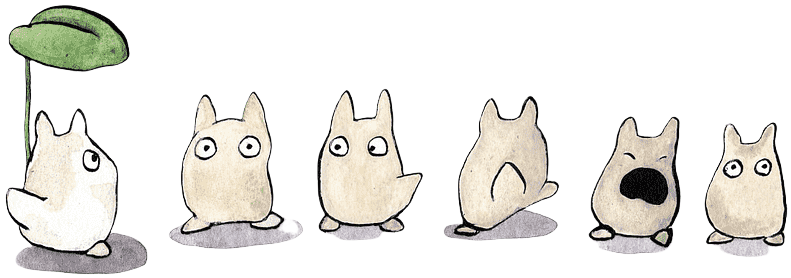
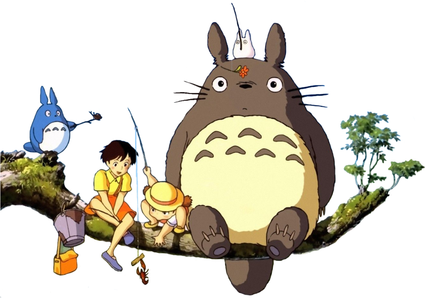

Historia
STUDIO GHIBLI (スタジオジブリ) es un estudio japonés de animación, considerado por la
crítica especializada y muchos cinéfilos como uno de los mejores estudios de animación del mundo en
la actualidad.
El estudio es mejor conocido por sus largometrajes animados y también ha producido varios
cortometrajes, comerciales de televisión y una película para televisión. Fue fundado el 15 de junio
de 1985 por los directores Hayao Miyazaki e Isao Takahata y el productor Toshio Suzuki , después del
éxito de la película de anime de Topcraft Nausicaä del Valle del Viento (1984). Studio Ghibli
también ha colaborado con estudios de videojuegos en el desarrollo visual de varios videojuegos.
Seis de las películas de Studio Ghibli se encuentran entre las 10 películas de anime más taquilleras
realizadas en Japón, siendo El Viaje de Chihiro (2001) la segunda más alta, recaudando más de 360
millones de dólares en todo el mundo. Muchos de sus trabajos han ganado el premio Animage Anime
Grand Prix, y cuatro han ganado el Premio de la Academia Japonesa de Animación del Año. Cinco de las
películas de Studio Ghibli han recibido nominaciones al Óscar. El Viaje de Chihiro ganó el Oso de
Oro en 2002 y el Premio de la Academia a la Mejor Película de Animación en 2003. Totoro, un
personaje de Mi vecino Totoro, es la mascota del estudio.
Galardones
| Año |
Película |
Director |
Categoría |
Premio
|
| 1999 |
Princesa Mononoke |
Hayao Miyazaki |
Mejor Pelicula |
Academia Japonesa |
| 2001 |
Viaje de Chihiro |
Mejor Pelicula |
Oscar |
| 2005 |
El Castillo Ambulante |
Mejor Pelicula |
Oscar (Nominado) |


Temática y Estética
Es claramente visible como las películas del estudio suelen girar alrededor de una estética y
temática muy concreta . Aparte de su estética de dibujo con uso de colores vivos y animados; se
detecta como la mayoría de las producciones se centran en un seguido de temas sobre los cuales
el
mismo Miyazaki ha confirmado su interés.
Por ejemplo, aparece de forma recurrente el tema de crecer
o madurar, ya que muchos de sus protagonistas se ven obligados a reflexionar o luchar contra las
situaciones en las que se encuentran viéndose obligados a trabajar o a lidiar con
responsabilidades
de gran peso, como en La tumba de las luciérnagas (1988).
Otro tema muy desarrollado en sus filmes
mediante los protagonistas es la independencia de la mujer, ya que el tratamiento de sus
personajes
femeninos destaca por tener valentía, agresividad y heroicidad, como por ejemplo en La princesa
Mononoke (1997). Pero, el tópico que más destaca es el trato de la naturaleza y la ecología,
debido
a que es uno de los problemas actuales que más preocupan al fundador y el cual ha querido
transmitir
en los filmes a través del humanismo y la violencia entre el mundo natural y el civilizado, como
se
aprecian en los filmes Nausicaä del Valle del Viento, La princesa Mononoke o Mi vecino Totoro
(1988).